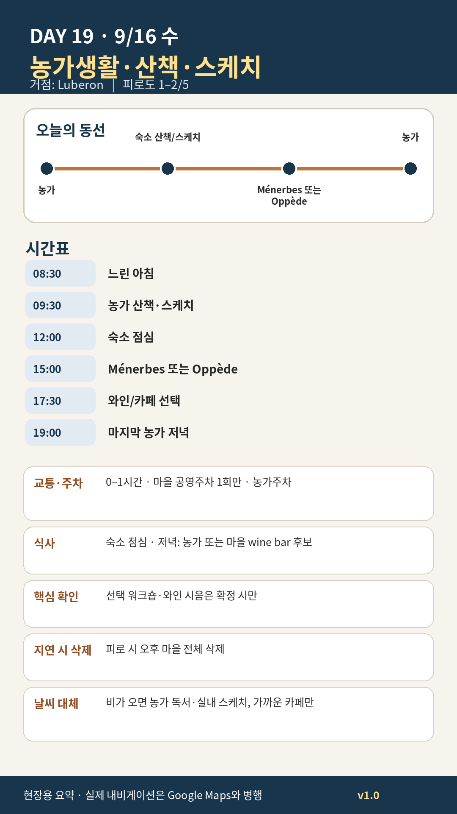

Day 19 · 9/16 수 · Luberon Phase 4 최종

카드의 지도영역은 일정 순서를 보여주는 개요이며 내비게이션이 아닙니다. 실제 도보·운전 경로는 Google Maps에서 다시 계산하세요.
시간표
이 날은 원고에 시각표가 없다. 구간 일정은 일정 한눈에 에 있다.
이 날의 메모
농가생활, 산책·스케치, Ménerbes 또는 Oppède
A안 — Ménerbes: 가장 균형 좋은 선택
성격: 능선 위 생활마을, 포도밭 전망, 식당·카페·와인 접근이 상대적으로 좋다.
꼭 해볼 것 - 아래쪽 주차 후 능선 방향으로 천천히 오르기 - 남북 양쪽 전망을 비교하기 - Maison de la Truffe et du Vin의 정원·와인바 운영을 재확인해 가벼운 시음 또는 구매 - 일몰 전 석조 파사드 스케치
적정 체류: 1.5–2시간
B안 — Oppède-le-Vieux: 더 드라마틱한 대안
성격: 정비가 덜 된 돌길과 폐허, 오르막, 중세 교회가 특징이다.
적합 조건 - 날씨가 선선하고 무릎·발 상태가 좋을 것 - 해 질기 전 충분히 내려올 것 - 비가 왔거나 돌길이 젖었으면 선택하지 않음
꼭 해볼 것 - 아래 주차장에서 옛마을까지 오르는 과정 자체를 경험 - 폐허·교회·계곡 전망을 한 장면으로 보기 - 카페보다는 물과 간식을 미리 준비
2026 특별 선택 — Roussillon 오커 페인팅 워크숍
9월 16일 10:00–12:00, 오커와 안료로 색을 만드는 2시간 워크숍이 공식 일정에 올라와 있다. €25이며 독일어 진행 안내다. Jason의 회화 관심에는 맞지만 언어와 오전시간 때문에 기본안이 아니라 선택안으로 둔다.
와인체험 선택
- Domaine Les Roullets: 5–9월 15:30–19:00 public cellar tasting 안내, 사전전화 권장
- Château La Canorgue: 월–토 09:00–12:00, 14:00–18:00 판매·시음, 성 내부 방문은 불가
- 운전자는 시음하지 않거나 뱉는 방식으로 제한
- 포도수확 시기에는 작업차량과 농기계가 늘 수 있으므로 포도밭 진입 금지
오늘 확인할 것
- 핵심 실행
- 농가생활·선택마을
- 권장 출발
- 느린 시작
- 완충
- 완전 완충일 유지
- 최고 리스크
- 선택일정 과밀화
- 우선 삭제
- 오후 마을 전체
- 대체안
- 농가 실내생활
- 식사·휴식
- 숙소식
- 잠금 필요
- 숙소
이 날의 장소
일자별 시간표와 본문 표기에서 찾은 것이다. 하루의 전부가 아니라 장소 카드가 있는 것만 담는다.